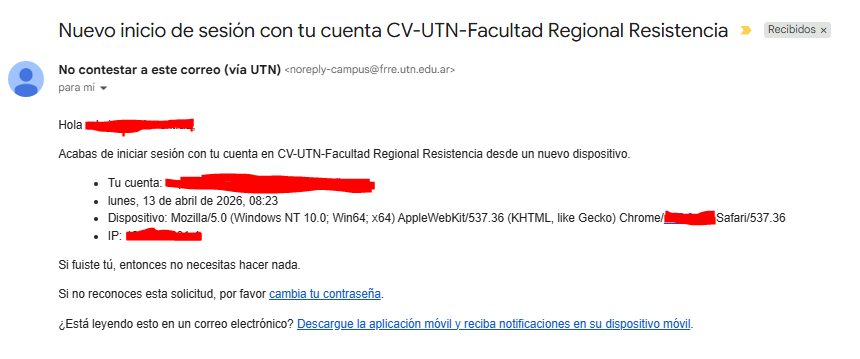

Recientemente te ha llegado un correo similar a este?

La semana pasada el equipo de CCD llevo acabo unas pruebas en el sistema de notificaciones del campus virtual, y es probable que debido a esas pruebas te haya llegado un correo como este. No hay de que alarmarse, este correo de seguro se habra enviado poco tiempo despues de que hayas iniciado sesion en campus en un dispositivo.
(0 réplicas)